In this tutorial, you will learn how to observe the impact of your chaos on services by using a Prometheus data source and configuring a dashboard on Chaos Center
In this tutorial, we will first go over why monitoring is important in chaos engineering. We will then look at the observability section on the portal and learn how to create and add a new data source. Lastly, we will use the data sources to create monitoring dashboards that we can use to observe impacts on our services.
Chaos Engineering aims to build confidence in a system, and this confidence can be built if this system can be tested in undesirable circumstances. As a part of the monitoring infrastructure, litmus has an analytics section that provides you with a complete set of visualization and performance metrics that helps you gain visual insights from your chaos experiments.
There are a couple of things that need to be done before you can begin to monitor your chaos workflows on the portal. But first, you need to add a data source.
First, we need to set up a data source that can be added. For this, we would be setting up Prometheus and Grafana dashboards. Prometheus is an example of a data source we can use here, however, there are other options.
git clone https://github.com/litmuschaos/litmus.git
cd litmus/monitoringKubectl create ns monitoringkubectl -n monitoring apply -f utils/prometheus/prometheus-scrape-configuration/kubectl -n monitoring apply -f utils/metrics-exporters/node-exporter/
kubectl -n monitoring apply -f utils/metrics-exporters/kube-state-metrics/kubectl -n litmus apply -f utils/metrics-exporters/litmus-metrics/chaos-exporter/kubectl -n monitoring apply -f utils/grafana/It might take a while for the manifests to apply, ensure that the pods in the monitoring namespace have a Running status before proceeding. Run the command below to ensure this.
kubectl get pods -n monitoringYou should get the following output.
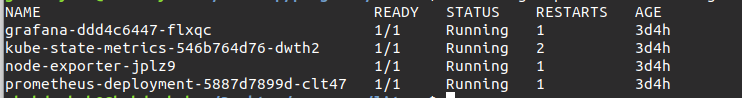
To access your Grafana dashboard, navigate to <node ip>:<grafana port>. Run the below command to get your node IP. In case you have an external IP you can directly make use of that too.
For this example, the Node IP is: 192.168.49.2
kubectl get nodes -o wide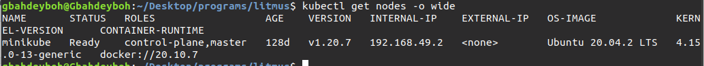
To get the port number of Grafana service, run the following command
kubectl get svc -n monitoring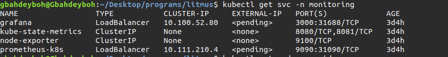
You can now navigate to <node ip>:<grafana port>, in my case, this will be 192.168.49.2:31688.
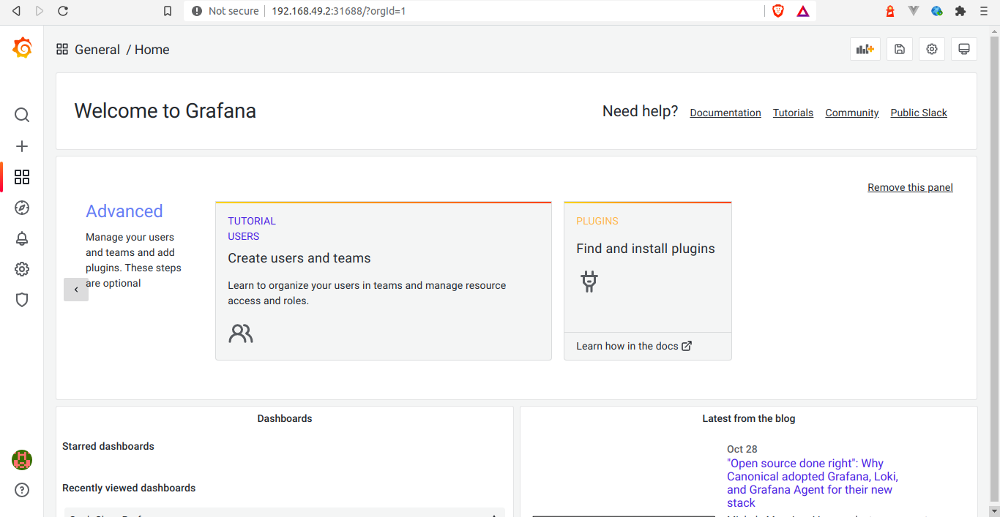
To access prometheus, navigate to <node ip>:<prometheus port>.
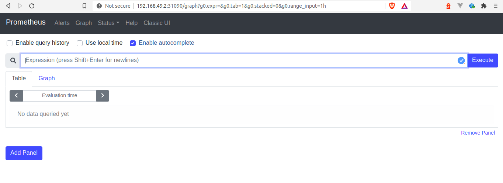
Go to the analytics section from the left navigation bar. Navigate to the Data Sources part of the top navigation bar and click the Add data source button.
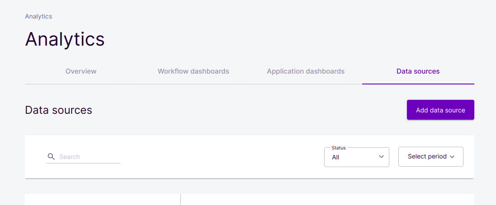
The Data Source Type has defaulted to Prometheus. Give your source a title and paste your <node ip>:<grafana port> in the URL section. Click next and save without editing anything else.
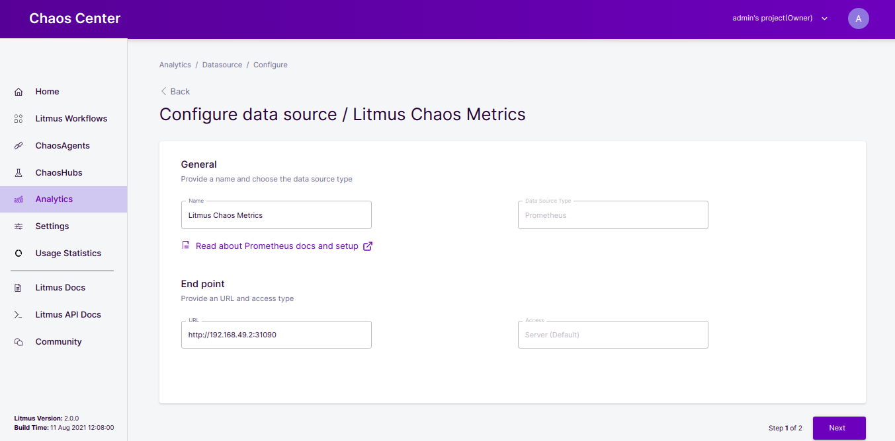
You will notice that this data source has now been added as a data source in your Data Source tab.
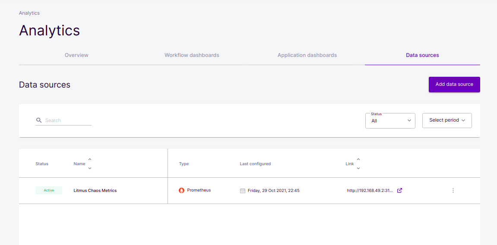
Now that we have a data source setup, we need to configure a dashboard to interface with our analytics data.
On the overview tab of the analytics section, click the Create a dashboard button.
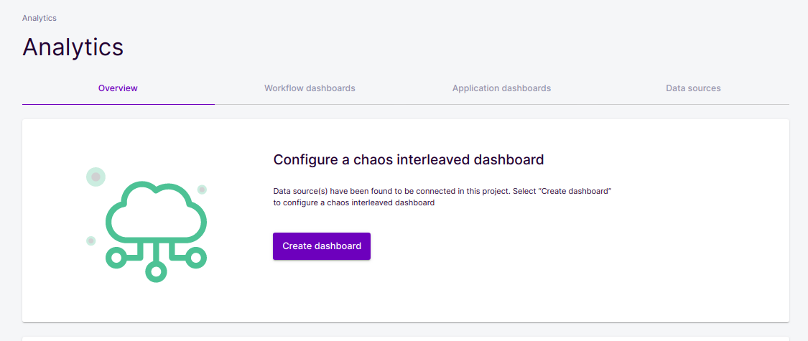
Next, you will select a dashboard type, there are two default dashboard types namely:
You will see an option to select one of these metrics. For this tutorial, we would be using the Pod metrics as an example, so select Pod metrics.
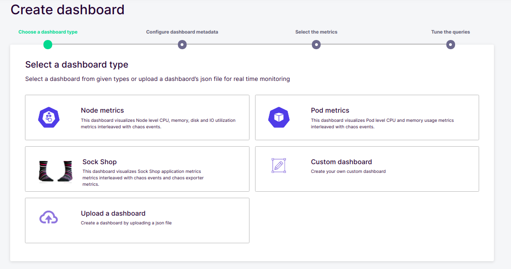
Don't edit anything on the dashboard metadata, leave it as it is and click Next.
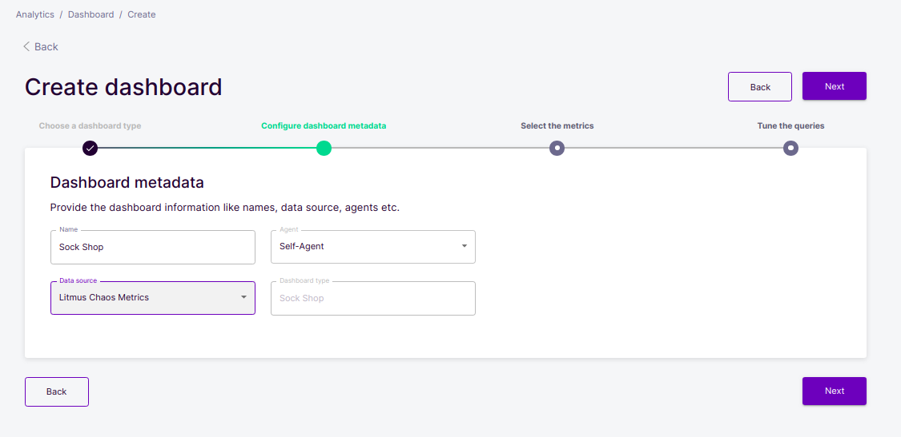
Next, you will select metrics to visualize, there are two options:
Click both checkboxes to select both.
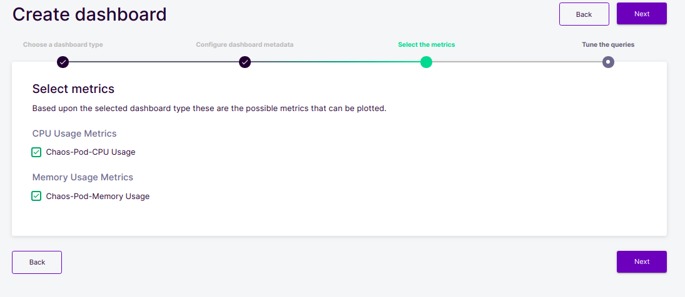
Next, you will see an interface that allows you to tune the Queries that are being used to fetch the visualized data. If you know some SQL, you can write custom queries that fit your use case.
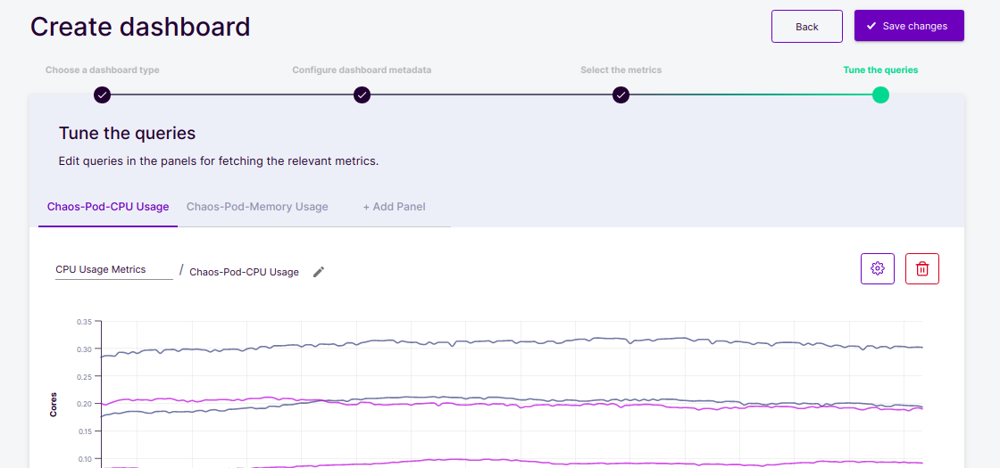
You can then save your changes and you'll be taken to your dashboard visualizations page.
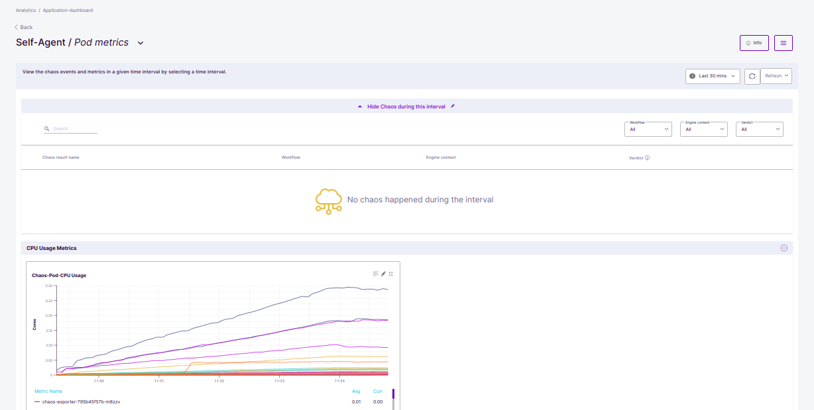
There is an info button at the top right of the dashboard, you can toggle this button to see and adjust your application dashboard information.
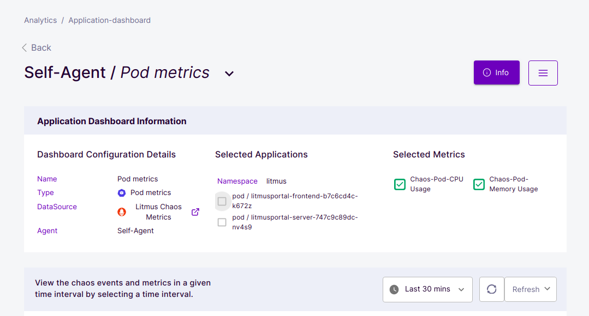
Clicking the menu bar beside the info button lets you do the following:
You will also see the visualization grouped into CPU and Memory usage.
The visualizations are with respect to time, and you can hover on the graphs to see the values at that specific data point boldly..
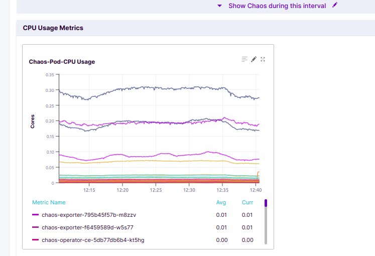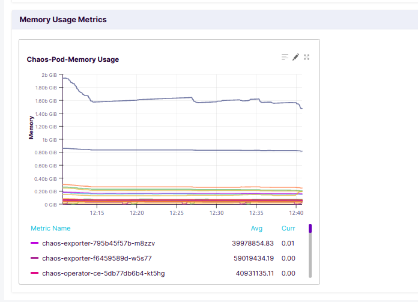
Each visualization has three buttons at the top right. Edit, pop out and view metrics info.
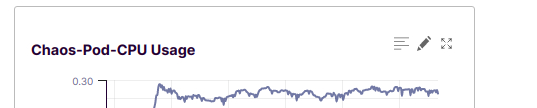
Clicking edit takes you back to the page where you can tune/edit its queries.
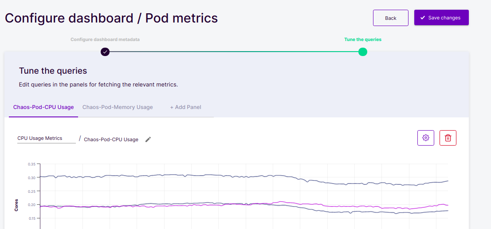
Clicking view metrics info or pop out displays the chart in a way that shows the metrics info more clearly.
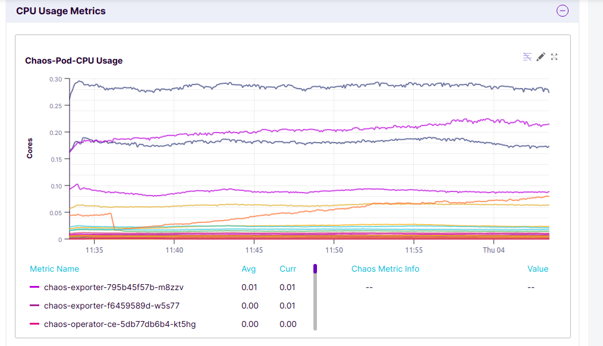
You can hover on anywhere on the chart to see the metrics at that point.
In this tutorial, you were introduced to the importance of Monitoring in chaos engineering then you went over how you can add a Prometheus data source to Chaos Center.
Last, you learned how to configure a new dashboard and monitor specific data points.
Please visit us on our LitmusSlack Channel (in Kubernetes workspace) and tell us how you like LitmusChaos and this tutorial! We are happy to hear your thoughts & suggestions!
Also, make sure to follow us on Twitter to get the latest news on LitmusChaos, our tutorials, and the newest releases!